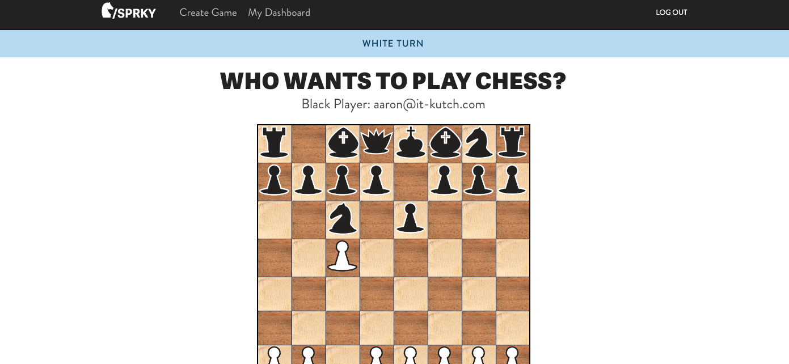

Vincent Job
Full Stack Web Developer
Vincent Job is an accomplished Web Developer and user experience product specialist. Previously he worked as a Helpdesk Support professional handling active directories as well as all PC and laptop repairs. He also holds a Linux Certification and worked briefly as a SAP Basis Administrator with IBM India. He completed the Coding Bootcamp through University of Texas to sharpen his skills to become one of the world's best Full Stack Web Developers.
Code Snippets
Temperature Conversion
This Ruby program will prompt the user for a temperature in degrees Celsius and let the user know what the corresponding temperature is in Fahrenheit.
n = 0
puts "Enter degrees in Celsius:"
celcius = gets.chomp
def celcius_to_fahrenheit(c)
fahrenheit = (c.to_f * 9/5)+32
end
puts "The temperature is #{celcius_to_fahrenheit(celcius)} in fahrenheit"Ordinal Challenge
This Ruby program will convert a plain number to the ordinal of the number. So for example, if the user enters 2, it will display 2nd, if the user enters 3, it will display 3rd, etc.
n = 0
puts "enter the number selected!"
number = gets.chomp
val1 = number.to_i
if val1 == 1
puts "You're in #{val1}st place!"
elsif val1 == 2
puts "You're in #{val1}nd place!"
elsif val1 == 3
puts "You're in #{val1}rd place!"
else val1 % 10 == 0||4||5||6||7||8||9
puts "You're in #{val1}th place!"
endFoobar
This Ruby program is an adaptation of a classic technical interview problem which displays sequences of the Foobar pattern.
n = 0
puts "How many items do you want to see?"
items = gets.chomp.to_i
list = []
(1..items).each do |n|
if n % 3 == 0 && n % 5 == 0
list << "FooBar"
elsif n % 3 == 0
list << "Foo"
elsif n % 5 == 0
list << "Bar"
else
list << n
end
end
puts listWeb Apps
Quote Generator

A database-powered quote generator with a mobile-first design, using the Ruby on Rails framework, HTML, and CSS. Uses Git and GitHub for version control, and launched on Heroku. Here are the links: Heroku Link GitHub Link
Yelp Clone

A Yelp clone that integrates with the Google Maps API and includes features like user comments, star ratings, image uploading, and user authentication. Here are the links: Heroku Link GitHub Link
Two-Sided Market Place

A two-sided, video-streaming marketplace platform that features credit card payment capabilities, user role management, complex user interfaces, and advanced database relationships. Here are the links: Heroku Link GitHub Link
Test Driven Development

An Instagram clone that was built using industry-standard, test-driven development following numerous red/green/refactor cycles. Here are the links: Heroku Link GitHub Link
Single Page Todo Application

This single-page to-do application features a fluid user interface that– by using JavaScript– allows users to rapidly add dynamic content. Here are the links: Heroku Link GitHub Link
Agile Team Project
Worked on an Agile software development team building a chess application. Under the guidance of a senior software engineer, we had weekly Agile team meetings for code reviews, sprint planning, and feature assignments.
Skils & Tools
Vincent has developed proficiency and expertise in the following programming languages and comfort with the following tools.
GitHub, Rubocop, Trello, Slack, and Codeship


Contact
Currently entertaining new opportunities. Please get in touch via:
vinjob30@gmail.com
https://github.com/VMJob
https://linkedin.com/in/vincent-job-2790b24a